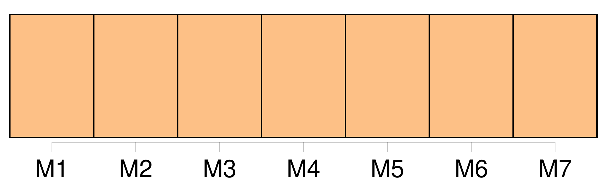

Longueur nb maillons : 30 mentions |
  |
L'Abbé Bernard [35 phrases] L'abbé n'essaya même pas de se défendre ; [on] ne pouvait lui vouloir aucun mal, à lui qui n'avait fait que du bien toute sa vie. [3 phrases]
» [6 phrases]
[On] pouvait voir à l'arrière du bateau, son nom, écrit en larges lettres noires, sur le bois peinturé en blanc : « Queen of the Waves », il appartenait à une compagnie de San-Francisco. [9 phrases] … En vain les lunettes marines fouillaient -elles l'horizon : [on] ne voyait rien, rien. [8 phrases]
… Mais qu'importe : continent ou île, ce morceau de terre, c'était le salut, si [on] pouvait l'atteindre. [15 phrases] Cette terre, sur les côtes de laquelle le « Queen of the Waves » avait fait naufrage, était étrange : ce n'était partout qu'arbres renversés, excavations profondes ; en certains endroits, [on] eût dit que le granit, qui formait la base du sol, avait été ouvert, séparé en deux par quelque cataclysme. [4 phrases] Et pour le moment, les naufragés durent céder à une préoccupation plus impérieuse : celle de se réconforter par un peu de nourriture et de se reposer, car tous étaient, [on] le devine, exténués de fatigue. [2 phrases] Lorsqu'on eut déjeuné, et, cette fois, on se paya le luxe de café brûlant, il fut décidé qu' [on] irait en excursion de découverte. [5 phrases] Du haut de cette montagne, [on] verrait la terre s'étendre à perte de vue, ou bien [on] apercevrait la mer l'entourant, hélas!! [3 phrases] Il fut décidé qu' [on] laisserait Turko en campement ; mais lorsque le chien vit partir son maître, il fut impossible de le retenir. [18 phrases]
Constatation peu réjouissante [on] en conviendra, dans de telles circonstances. L'Océan offrait, cependant une particularité, qui ne manqua pas d'intéresser les deux amis malgré les angoisses de l'heure présente ; l'eau était si limpide que le regard pouvait plonger à une grande profondeur : quand les vagues se retiraient, [on] voyait même le fond de la mer, [on] apercevait les poissons qui nageaient entre deux eaux. [43 phrases]
» [1 phrases] Il ne serait pas si difficile de construire d'autres sous-marins, que nous pourrions relier entre eux par des couloirs-tubes, détachables à loisir ; quand l'un des sous-marins voudrait remonter à la surface, il n'aurait qu'à se détacher des autres ; si la ville entière avait quelquefois, la fantaisie d'aller faire une expédition chez les terriens, [on] n'aurait encore qu'à détacher les tubes, et chaque habitant de la ville voyagerait ainsi avec toute sa maison. [144 phrases] On prolongea le déjeuner, qui fut des plus joyeux — [on] n'avait pas l'avantage d'un nouvel hôte souvent à Némoville — et le curé plut à Roger et à Paul par son esprit autant que par sa bonté, dont il donna bientôt des preuves. [35 phrases] Au moment où les voyageurs allaient se rembarquer, cet homme vint à eux et leur dit : « Est -il vrai qu'il existe une ville sous-marine où l' [on] peut vivre en paix, loin de toutes les conventions du monde, loin de toutes les niaiseries et de toutes les faussetés qui fleurissent sur la terre?? [20 phrases]
Depuis la mort de son père, [on] eût dit qu'elle subissait l'influence de ce personnage, qui n'était guère sympathique ; quelqu'un avait même insinué que la fille de M. Richard éprouvait un sentiment plus doux pour le gouverneur, parce que, certains jours, elle avait rougi de plaisir en l'apercevant. [23 phrases]
La bonté de la jeune fille perdait sans doute un peu de son mérite par cette pensée intéressée, mais [qui] saurait la blâmer, connaissant le sentiment qu'elle avait au cœur. [35 phrases] non, répliqua-t -elle, [on] est si bien ici, je me sens si en sûreté auprès de Marcelle …… [32 phrases]
[On] n'y était pas grandement, surtout le dimanche, car les habitants de Némoville aimaient à assister à la messe et quelques-uns étaient obligés d'entendre l'office divin dans le couloir.
Or, ce jour du vingt-quatre décembre, l'abbé était très occupé, car [on] lui avait demandé de célébrer la messe de minuit, et il aurait voulu donner à cette messe autant de solennité que le permettaient les lieux. [10 phrases] [On] entendit dans les couloirs des bruits de pas, c'étaient les Némovilliens qui venaient présenter leurs hommages à leur curé, et Roger, au nom de tous, offrit au prêtre l'église sous-marine : « Nous y avons tous travaillé, expliqua-t -il ; les uns ont modelé les statues, les autres ont fait les plans et les enfants eux -mêmes ont fait leur part, en recueillant sur la grève les colimaçons qui ornent le maître-autel. [11 phrases] [On] avait fait transporter l'orgue du « Nautilus » dans l'église et préparé une belle messe, car les musiciens ne manquaient pas à Némoville. Le gouverneur et son secrétaire ayant pris place aux bancs armoriés qu' [on] avait préparés pour eux, une main habile joua les premiers accords d'un chant de Noël. À ce moment, la porte de la chapelle se rouvrit, et l' [on] vit apparaître M. Duflot, dans une chaise à roulette, que poussait son fidèle domestique. [20 phrases]
Il n'était pas de ceux qui semblent avoir tout vu à travers un verre grossissant, et qui tiennent leurs auditeurs pour des nigauds : il parlait quand [on] l'interrogeait, et savait se taire au bon moment. |

|
La ressource peut être téléchargée sur la page Ortolang
Si vous avez des questions ou vous voyez des erreurs, merci d'envoyer un mail à silvia.federzoni89@gmail.com
Site développé par S. Federzoni (contact)